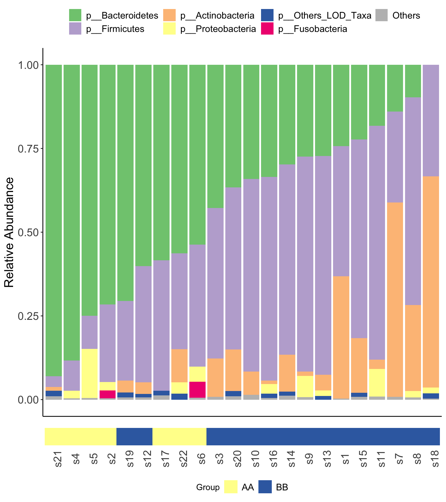
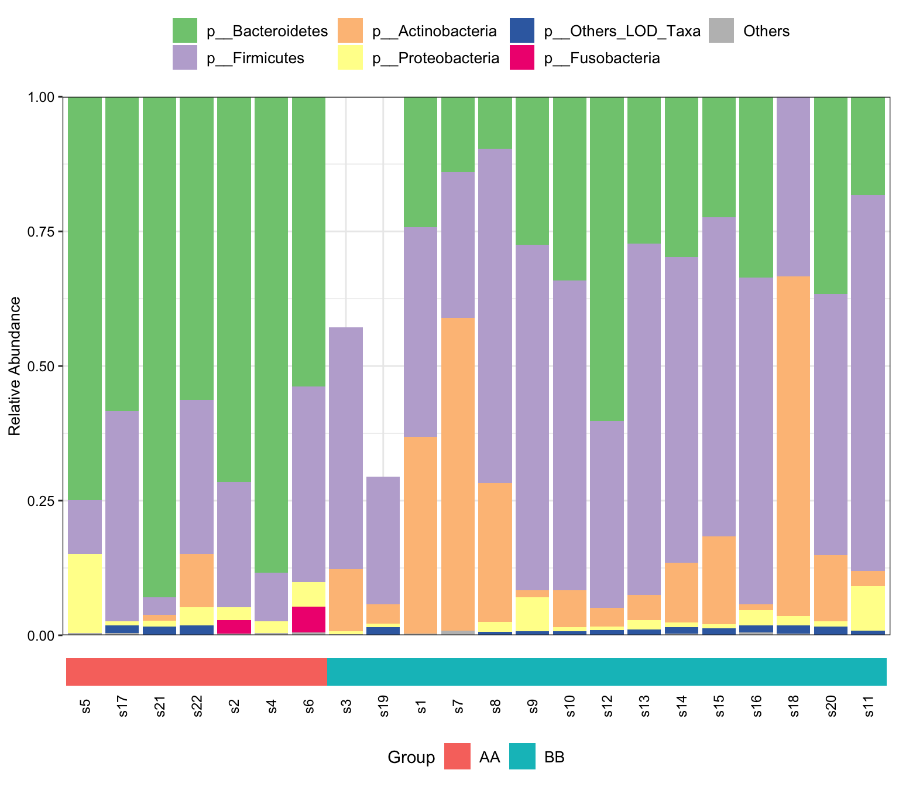
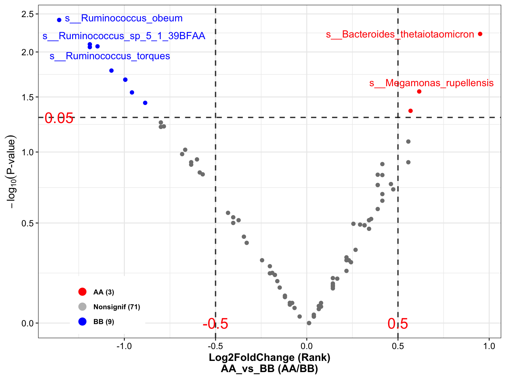

Chapter 7 Microbial composition
Loading packages
library(XMAS2)
library(dplyr)
library(tibble)
library(phyloseq)
library(ggplot2)
library(ggpubr)A whole picture of the microbial composition.
7.1 Stacked barplot
- XVIZ package
plot_stacked_bar_XIVZ(
phyloseq = metaphlan2_ps_species,
level = "Phylum",
feature = "Group")

Figure 7.1: Microbial composition in XVIZ
- XMAS package
plot_StackBarPlot(
ps=metaphlan2_ps_species,
taxa_level="Phylum",
group = "Group",
cluster = TRUE)

Figure 7.2: Microbial composition
7.2 Core microbiota
prevalences <- seq(0.05, 1, 0.05)
detections <- 10^seq(log10(1e-3), log10(0.2), length = 10)
pl_core <- plot_core_taxa(metaphlan2_ps_species,
plot.type = "heatmap",
colours = gray(seq(0, 1, length=5)),
prevalences = prevalences,
detections = detections,
min.prevalence = 0.5)+
xlab("Detection Threshold (Relative Abundance (%))")
pl_core

Figure 7.3: Core taxa
The degree of color indicates the size of abundance and prevalence.
- Use
core_membersto obtain the core taxa. detection for abundance and prevalence for occurrence.
core_taxa_name <- core_members(metaphlan2_ps_species, detection = 0.01, prevalence = 0.5)
print(core_taxa_name)## [1] "s__Bacteroides_uniformis" "s__Bacteroides_vulgatus" "s__Faecalibacterium_prausnitzii"
## [4] "s__Ruminococcus_sp_5_1_39BFAA"Result:
Only 4 genera (s__Bacteroides_uniformis, s__Bacteroides_vulgatus, s__Faecalibacterium_prausnitzii and s__Ruminococcus_sp_5_1_39BFAA) passed the threshold of detection and prevalence which we choose.
7.3 Systematic Information
sessionInfo()## R version 4.1.2 (2021-11-01)
## Platform: x86_64-apple-darwin17.0 (64-bit)
## Running under: macOS Monterey 12.2.1
##
## Matrix products: default
## LAPACK: /Library/Frameworks/R.framework/Versions/4.1/Resources/lib/libRlapack.dylib
##
## locale:
## [1] en_US.UTF-8/en_US.UTF-8/en_US.UTF-8/C/en_US.UTF-8/en_US.UTF-8
##
## attached base packages:
## [1] grid stats4 stats graphics grDevices utils datasets methods base
##
## other attached packages:
## [1] magrittr_2.0.2 glue_1.6.2 Gmisc_3.0.0 htmlTable_2.4.0
## [5] Rcpp_1.0.8.2 readxl_1.4.0 SummarizedExperiment_1.24.0 Biobase_2.54.0
## [9] GenomicRanges_1.46.1 GenomeInfoDb_1.30.1 IRanges_2.28.0 S4Vectors_0.32.3
## [13] BiocGenerics_0.40.0 MatrixGenerics_1.6.0 matrixStats_0.61.0 ggpubr_0.4.0
## [17] ggplot2_3.3.5 phyloseq_1.38.0 tibble_3.1.6 dplyr_1.0.8
## [21] XMAS2_2.1.3
##
## loaded via a namespace (and not attached):
## [1] backports_1.4.1 Hmisc_4.6-0 corrplot_0.92 plyr_1.8.6 igraph_1.2.11
## [6] splines_4.1.2 crosstalk_1.2.0 BiocParallel_1.28.3 TH.data_1.1-0 digest_0.6.29
## [11] foreach_1.5.2 htmltools_0.5.2 fansi_1.0.2 checkmate_2.0.0 memoise_2.0.1
## [16] cluster_2.1.2 limma_3.50.1 Biostrings_2.62.0 annotate_1.72.0 sandwich_3.0-1
## [21] metagenomeSeq_1.36.0 jpeg_0.1-9 colorspace_2.0-3 blob_1.2.2 ggrepel_0.9.1
## [26] xfun_0.30 crayon_1.5.0 RCurl_1.98-1.6 jsonlite_1.8.0 libcoin_1.0-9
## [31] genefilter_1.76.0 survival_3.3-1 zoo_1.8-9 iterators_1.0.14 ape_5.6-2
## [36] gtable_0.3.0 zlibbioc_1.40.0 XVector_0.34.0 DelayedArray_0.20.0 car_3.0-12
## [41] RcppZiggurat_0.1.6 Rhdf5lib_1.16.0 shape_1.4.6 pscl_1.5.5 abind_1.4-5
## [46] scales_1.1.1 pheatmap_1.0.12 mvtnorm_1.1-3 DBI_1.1.2 edgeR_3.36.0
## [51] rstatix_0.7.0 xtable_1.8-4 foreign_0.8-82 bit_4.0.4 Formula_1.2-4
## [56] DT_0.21 truncnorm_1.0-8 glmnet_4.1-3 htmlwidgets_1.5.4 httr_1.4.2
## [61] gplots_3.1.1 RColorBrewer_1.1-2 modeltools_0.2-23 ellipsis_0.3.2 NADA_1.6-1.1
## [66] pkgconfig_2.0.3 XML_3.99-0.9 farver_2.1.0 nnet_7.3-17 sass_0.4.0
## [71] locfit_1.5-9.5 utf8_1.2.2 tidyselect_1.1.2 labeling_0.4.2 rlang_1.0.2
## [76] reshape2_1.4.4 AnnotationDbi_1.56.2 munsell_0.5.0 cellranger_1.1.0 tools_4.1.2
## [81] cachem_1.0.6 cli_3.2.0 generics_0.1.2 RSQLite_2.2.10 ade4_1.7-18
## [86] broom_0.7.12 evaluate_0.15 biomformat_1.22.0 stringr_1.4.0 fastmap_1.1.0
## [91] yaml_2.3.5 knitr_1.37 bit64_4.0.5 caTools_1.18.2 forestplot_2.0.1
## [96] purrr_0.3.4 KEGGREST_1.34.0 coin_1.4-2 nlme_3.1-155 mbzinb_0.2
## [101] compiler_4.1.2 rstudioapi_0.13 png_0.1-7 ggsignif_0.6.3 zCompositions_1.4.0
## [106] geneplotter_1.72.0 bslib_0.3.1 stringi_1.7.6 highr_0.9 lattice_0.20-45
## [111] Matrix_1.4-0 vegan_2.5-7 permute_0.9-7 multtest_2.50.0 vctrs_0.3.8
## [116] pillar_1.7.0 lifecycle_1.0.1 rhdf5filters_1.6.0 jquerylib_0.1.4 data.table_1.14.2
## [121] cowplot_1.1.1 bitops_1.0-7 latticeExtra_0.6-29 R6_2.5.1 bookdown_0.24
## [126] gridExtra_2.3 KernSmooth_2.23-20 codetools_0.2-18 MASS_7.3-55 gtools_3.9.2
## [131] assertthat_0.2.1 Wrench_1.12.0 rhdf5_2.38.1 DESeq2_1.34.0 withr_2.5.0
## [136] multcomp_1.4-18 GenomeInfoDbData_1.2.7 mgcv_1.8-39 parallel_4.1.2 rpart_4.1.16
## [141] tidyr_1.2.0 Rfast_2.0.6 rmarkdown_2.13 carData_3.0-5 ALDEx2_1.26.0
## [146] lubridate_1.8.0 base64enc_0.1-3